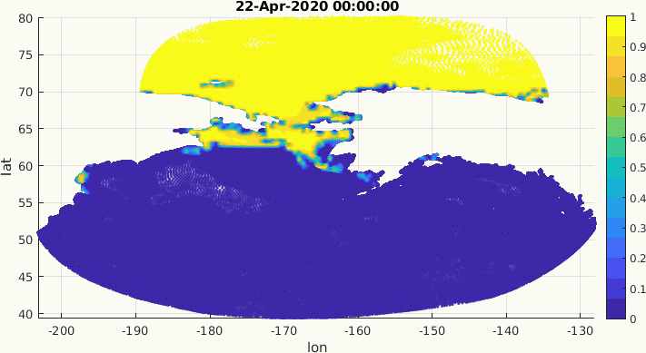
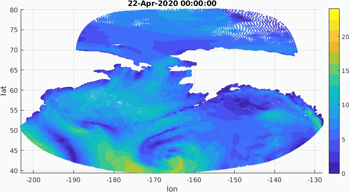
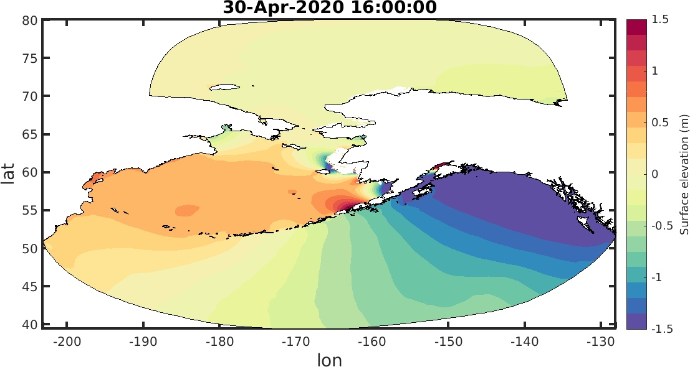

2. Forcing boudary conditions for the model
Forcing 8 harmonic constituents on open ocean boundaries, 4 semi-diurnal : M2, N2, S2, K2; 4 diurnal : K1, Q1, O1, P1.
Reanalysis wind and ice products: https://nomads.ncdc.noaa.gov/data/gfsanl/;
Forecast wind and ice products: https://www.ftp.ncep.noaa.gov/data/nccf/com/gfs/prod/.
Simulation for 18 days, the first 10 days is using reanalysis met data and the last 8 days using forecast data. Spin up for 5 days, and dt=2s.
3. Flowchart of the forecasting system

4. Mesh with floodplain (nodes: 1,648,088; elements: 3,211,583)

5. Ice concentration
6. Wind speed (applying gfs reanalysis and forecast wind)
7. Surface elevation
Animetion, 6 hourly output.

Two snapshots.

8. Maximum surface elevation during the simulation period
Zoom in costal area ([-170 -155 55 71])
9. Comparison of water level at different stations
Nome Station

Red Dog Dock Station

Prudhoe Bay Station

Unalakleet（observation data is not available）Station

St. Michael station
Gauge data is from JOA Surveys, LLC (http://joasurveys.com/rtwl/stmichael/), without filtering, raw data subtracts MSL(8.45m).